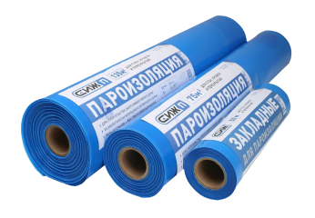
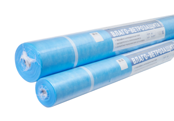

-
Пароизоляционные материалы СИЖ ПРОФ+
Пароизоляционные материалы СИЖ —идеальное решение для строительства комфортного энергоэффективного каркасного дома.
Основное значение – профессиональная защита от попадания и накопления влаги в ограждающих конструкций, стенах, кровли, цокольных и чердачных перекрытиях. Также гарантирует исключение проникновения вредных микрочастиц теплоизоляционного материала в жилые помещения Производство материалов с 2015 года, опыт применения - в 35-ти регионах РФ.
Соответствует требованиям по нормам и качеству строительства жилых домов с деревянным каркасом (СНиП СП 31-105-2002)
Показатели паропроницаемости соответствуют стандартам высокого качества и гарантируют исключение образования конденсационной влаги в утеплителе даже при больших перепадах температур
Высокопрочный материал. Толщина – 200 микрон, плотность 180 г/м2
Экологичный и безопасный материал. В основе всех пароизоляционных материалов СИЖ многослойная соэкструзионная пленка из первичных и металлоценовых полиэтиленов LDPE /Low Density Polyethylene. Достоинства материала: Не имеет запаха, не проводит электрический ток, не вступает в реакцию с бытовыми и промышленными реактивами, не разлагается естественным путем, исключает образование плесени и грибков. Имеет широкое применение в медицине, пищевой промышленности, производстве детских игрушек
Удобная транспортировка. Ширина рулона в сложенном виде - 1,1 м, легко помещается в легковую машину Удобно готовить к монтажу. Отмерять и отрезать можно в небольших помещениях. Разворачивайте пленку непосредственно при монтаже!
Быстрый монтаж. Места сгибов на пленке упрощают процесс ровного и аккуратного монтажа
Ширина рулона 3 метра позволяет сократить количество стыков/швов, а значит уменьшить расход соединительных лент (скотча) на их проклейку до 40%. При высоте потолков 2,6 – 2,9 м остаются выпуски для подклейки пароизоляционной плёнки пола и потолка
В каждом рулоне подробная и понятная инструкция
Соответствует требованиям по нормам и качеству строительства жилых домов с деревянным каркасом (СНиП СП 31-105-2002)
Полезные статьи про пароизоляцию читайте здесь
-
СИЖ 135
Пароизоляционная пленка для внутренних помещений:
Общая площадь - 135 кв. м
Длина - 45 м
Толщина - 200 микрон
Вес - 25 кг
Срок службы - более 50 лет
Габариты в упаковке ШхВхД 0,25х1,1х0,25 м.
-
СИЖ 75
Пароизоляционная пленка для внутренних помещений:
Общая площадь - 75 кв. м
Длина - 25 м
Ширина - 3 м
Толщина - 200 микрон
Вес - 14 кг
Срок службы - более 50 лет
-
Закладные СИЖ
Пароизоляционная пленка в конструкционные узлы каркаса для последующей подклейки основной пароизоляционной пленки:
Общая площадь - 25 кв. м
Длина - 50 м
Ширина - 50 см
Толщина - 200 микрон
Вес - 5.5 кг
Срок службы - более 50 лет
-
-
Влаго-ветрозащитная мембрана СИЖ ПРОФ
Супердиффузионная паропроницаемая влаго- ветрозащитная плёнка СИЖ ПРОФ - идеальное решение для строительства комфортного, энергоэффективного каркасного дома
Основное значение – применяется в качестве влаго-ветрозащиты в конструкциях утеплённых скатных кровель, каркасных стен, стен с наружным утеплением, всех типов перекрытий. Высокая прочность материала позволяет применять его в условиях повышенных нагрузок при монтаже (погодные условия, сложность конструкции, продолжительность монтажа) и эксплуатации.
Водоупорностью, необходимой для защиты утеплителя и внутренних узлов и конструкций здания от подкровельного конденсата и атмосферных осадков, проникающих под кровлю и наружную обшивку
Паропрницаемостью, не препятствующей выходу водяных паров из утеплителя в вентилируемый зазор
Влаго-ветрозащитная мембрана СИЖ Проф препятствует продуванию теплоизоляции, эффективно снижая теплопотери
Соответствует требованиям СНИП –II–26–76 «КРОВЛИ»
Трехслойная с антиконденсатным слоем
Высокопрочный материал. Плотность 115 г/м²
60 + 80 C сохраняет свойства
Для удобного монтажа – разметка на полотне
Пошаговые рекомендации по монтажу в каждом рулоне
Паропроницаемость: 850 г/(м²⋅сут)
Влагоустойчивость: 5000 мм вод. ст.
Водоупорность, мм. вод. ст., ГОСТ 3816-81 (п.6.2) не менее 5000
Максимальная сила растяжения в прод./попер. направлении, Н/50 мм, ГОСТ 31899-2-2011 165 (±30) / 120 (±20)
Относительное удлинение при разрыве в прод./попер. направлении, %, ГОСТ 31899-2-2011 70 (±30) / 70 (±30)
Группа горючести: Г4
Группа воспламеняемости: умеренновоспламеняемые (В2)
УФ стабильность - 4 месяца
Полезные статьи про пароизоляцию читайте здесь
-
СИЖ Проф 70
Общая площадь - 70 кв. м
Длина – 43,7 м
Ширина – 1,6 м
Вес - 25 кг
Плотность - 115 г/м²
Вес - 8 кг
Габариты в упаковке ШхВхД 0,16 х 1,6 х 0,16 м
-
СИЖ Проф 35
Общая площадь - 35 кв. м
Длина – 21,8 м
Ширина – 1,6 м
Плотность - 115 г/м²
Вес - 14 кг
Вес - 4 кг
Габариты в упаковке ШхВхД 0,12 х 1,6 х 0,12 м.
-
Пароизоляционная плёнка
В нашем интернет-магазине Вы можете:
- Рассчитать необходимое количество товаров
- Заказать продукцию с доставкой, оплатить заказ
- Ознакомиться с партнерскими программами